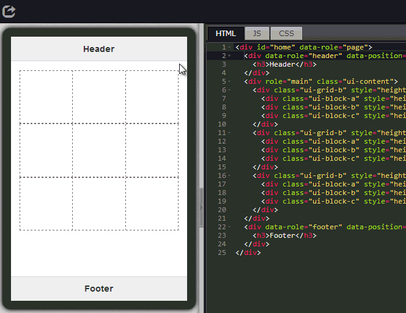
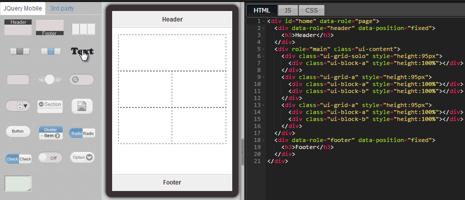

In fact, even after a visual designer completes the UI design and hands it over to an engineer to have the screen created, it would often turn out that either the screen would appear to be a bit too far left, or the gap would be a bit too large. The screen just cannot be finalized until after several rounds of check and adjustment. Moreover, if after the final confirmation, the client changes the UI requirements, the whole process will have to be repeated all over again. This not only increases the costs, but could also deplete the manpower.
Now we can utilize the cloud based development tool of EZoApp to easily lay out a suitable screen by dragging-and-dropping the components it provides onto the screen and writing simple code (some screens do not even require writing any code.) We can even copy-and-paste externally edited web page code into the editor and instantly preview the screen format it produces, thus saving much development time in connecting the front-end and back-end. EZoApp also provides the cloud storage capability, which would allow developers to make the screens available to clients for their review as soon as they are completed. The cloud storage also provides robust versioning control mechanism and security, thus making it an indispensable tool for developers.
After reading the five chapters of introductive tutorial, you must have gained a certain level of understanding in EZoApp's strengths and capabilities! In the next chapter, we will use the techniques learned to build an entry screen quickly.
Link of example:
Basic component hands-on practice - building entry point pages

As described in the previous sections, we can use the drag-and-drop method to add components onto the screen and have the program code generated automatically. However, knowing just how to drag-and-drop component is not enough to finish laying out a page in a few minutes. We need to properly use EZoApp's attribute panel tool to quickly edit the components we dragged onto the page. (If you cannot find the attribute panel, try to make the program code block larger or smaller, or hide the program code block temporarily, then you should be able to see it.)

Here, we will use the attribute panel to edit the grid component's attributes. We can set up the grid to have one or two columns. If we need to have two or more rows, just add another grid .
We again use the drag-and-drop method to easily add texts into the grid . To edit the texts, just click them. A note to point out here-- by default, the texts are set up using h1 tag and its font and size, as well as right aligned. We can add style="text-align: center" in the h1 tag to make the texts center-aligned.
<h1 style="text-align:center;">TEXT</h1>
To add images, we will use a 3rd party image component here. However, because the default width of the component is 100%, and the default height is 250px, the image might appear somewhat distorted. Nevertheless, we only need to manually modify the height and width, and fill in the required web address of the image, in order to create a proper sized image.

Header and footer components are basic components that use jQuery Mobile. Therefore, we only need to add a small program code of data-theme="b" in their tags in order to change their styles.
<div data-role="header" data-position="fixed" data-theme="b">
<h3>I am Header </h3>
</div>

Actually, thus far we pretty much finished laying out the page content just by dragging components and modifying program code. (However, editing program code still requires some basic understanding of CSS; for example, how to use margin, how to set up height and width and so on.) The next thing we need to do is to choose a proper background image, then add it in the outmost div tag as the background and that's it!
<div id="home" data-role="page" style="background:url(img url); background-size:100% 100%;">

Link of example:
Basic component hands-on practice - building entry point pages